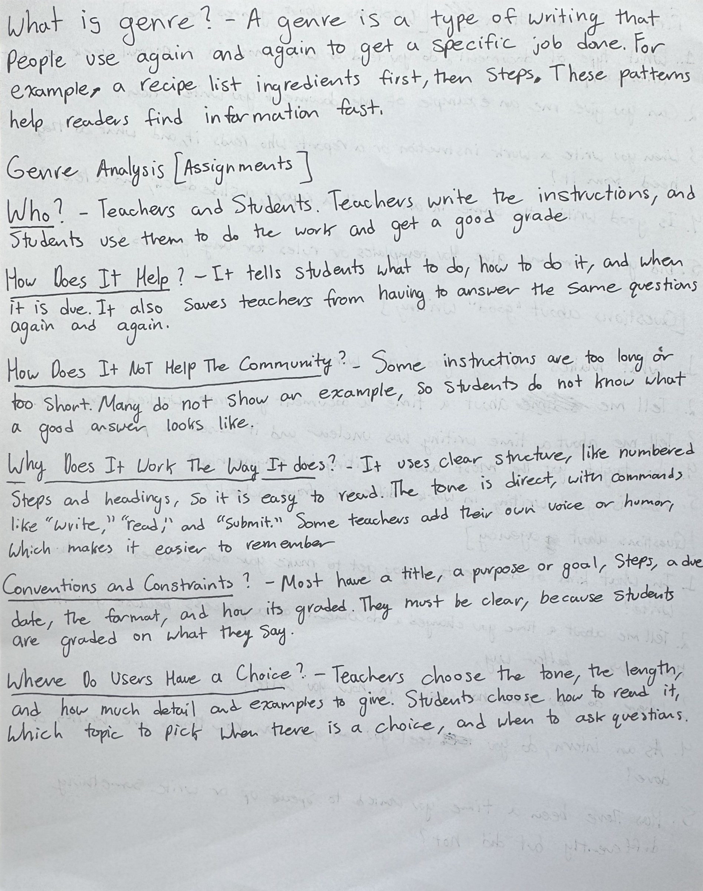
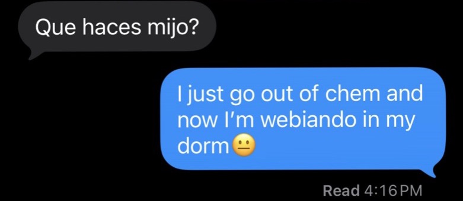

Full Workshop Draft
My full workshop draft of Major Project 2: How Writing Works, for peer review. It uses my own writing life and my interview with my brother, Ethan Wong.
Full Workshop Draft of Major Project 2: How Writing Works. This draft uses my own writing life and my interview with my brother, Ethan Wong, an Industrial Engineering intern at Lockheed Martin. It argues that having agency is not always a good thing, and that good writing has to change so writers can get their specific point across.
1. Does my claim that agency is not always good make sense, or does it sound like I am against agency?
2. Is the link between my texts to my mom and Ethan’s writing at work clear to you?
Who Reads This?
MP2 Workshop Draft
Michael Wong
ENC 1101 · Fall 2026
Cover
Framing statement
Full Workshop Draft of Major Project 2: How Writing Works. This draft uses my own writing life and my interview with my brother, Ethan Wong, an Industrial Engineering intern at Lockheed Martin. It argues that having agency is not always a good thing, and that good writing has to change so writers can get their specific point across.
1
Questions for my peer reviewers
1. Does my claim that agency is not always good make sense, or does it sound like I am against agency?
2. Is the link between my texts to my mom and Ethan’s writing at work clear to you?
2
Workshop draft
Michael Wong · Professor Baker · ENC 1101 · 17 November 2026
The person I text the most is my mom. She is a native Spanish speaker, and even though most of my texts to her are in English, some things only make sense to her in Spanish. When she asks what I am up to and I am not doing anything important, I don’t write “nothing.” I write “webiando.”
3
That one word tells her I am chilling, doing something low energy, and definitely not doing homework. No teacher would give me credit for that text, but my mom knows exactly what I mean.
4
Every reader has their own expectations, and writers have to change how they write to meet them. Writers also have to decide how much freedom to take. Having agency is not always a good thing. A writer with full freedom and nobody checking can get it wrong.
5
Good writing also has to change from reader to reader, because that change is what lets a writer get their specific point across. My older brother, Ethan Wong, learned both of these lessons at his internship at Lockheed Martin.
6
Ethan is a junior at UCF majoring in Industrial Engineering. He has worked as an Industrial Engineering intern at Lockheed Martin for about seven months, on a team that supports a production line building launch control hardware. He does time studies, fixes bottlenecks, and updates work instructions, the step-by-step documents that tell technicians how to build each part.
7
Before the internship, he thought work writing would be “like... you know, lab reports from school.” Instead, he writes emails, Teams messages, status reports, and work instructions, each for a different reader.
8
In our class, agency means the power to make your own choices about what to write and how to write it, even with rules, templates, and other people around you. Ethan told me his agency depends on what he is writing:
9
I can’t just change a work instruction on my own. I have to draft a redline and then Dana and quality and sometimes the supervisor all review it and sign off. That can take, like, two or three weeks.... So I guess agency depends on the genre and who’s watching.
10
Emails are the opposite. Nobody reviews them. Ethan’s worst writing mistake came from one. Early in his internship, he emailed the material handlers on a Friday that some kits would move to a new staging area “starting next week.” He meant the following Monday. They read it as that same week.
11
Parts moved two days early, a kitting cart ended up in the wrong spot, and a build shift lost about an hour looking for it. “Nobody got hurt, nothing was damaged, but I felt awful,” he said.
12
Compare that with a cable harness work instruction he fixed, where he had the least agency. One step said only to route the harness “per drawing,” and new techs kept getting it wrong. Ethan watched experienced techs, took photos, and wrote a redline that split that one step into five. It went through the slow sign-off process, and afterward, questions from the floor dropped a lot.
13
The document with the least freedom worked. The email with the most freedom failed.
14
Agency is not automatically good for a writer. The sign-offs that limit Ethan also put more eyes on his writing before anyone acts on it. As he put it, “Being an intern doesn’t mean you have no voice. It means you’d better bring data with it.” Writers with a lot of freedom have to build in their own check.
15
My own story shows the other side. In my senior year of high school, my biology class had to write a paper on adaptation, limited to the Galápagos Islands. I wanted to write about how animals adapted near Chernobyl, because that was much more interesting to me. I wrote about the Galápagos because my grade depended on it.
16
Nothing bad happened, but I never looked up how the animals in Chernobyl adapted. The question just stopped.
17
Chimamanda Ngozi Adichie, a Nigerian novelist, helps me explain what I lost. In her TED talk “The Danger of a Single Story,” she describes how, as a child who read mostly British and American books, she wrote stories about white characters who ate apples and played in snow, because she believed that was what stories had to be about. Like me, she wrote what she thought she was supposed to write, not what she wanted to.
18
She warns that “power is the ability not just to tell the story of another person, but to make it the definitive story of that person” (Adichie). My assignment made the Galápagos the definitive story of adaptation. My teacher held that power, and I gave up my agency because the grade was on the line.
19
In my genre analysis of school assignments (Figure 1), I wrote that instructions “must be clear, because students are graded on what they say.” The grade is what gives them their power.
20

21
Looking back, I could have tried Ethan’s move: bring evidence and ask it as a question, like “Could I compare Galápagos finches to animals near Chernobyl?” Too little agency costs writers their own questions. Too much with no check can cost a whole shift an hour.
22
Collin Brooke and Allison Carr, two writing teachers, argue in “Failure Can Be an Important Part of Writing Development” that failing is part of how writers get better.
23
Expectations for writers change “from year to year and sometimes course to course,” and “there is no way we can expect them to be able to intuit these shifting conditions” (Brooke and Carr 63). Writers have to “try, to fail, and to learn from those failures” (Brooke and Carr 63).
24
That is how Ethan learned what the floor expected from him. A professor reading a lab report doesn’t move parts the moment they finish reading. The material handlers do. His “next week” email showed him they need an exact day, time, and name. Now he writes, “On Monday, November tenth, at six a.m. material handling moves kits A through D to Station Four. No room for confusion.”
25
Brooke and Carr call failure “an opportunity for growth,” and Ethan’s email is a clear case of it. Writers cannot guess what a new reader expects. Failing is often how we find out.
26
Once Ethan learned that his readers expect different things, he started writing differently for each of them:
27
For Teams messages with my team, good writing is just being clear and fast, like, Station Four needs more kits by nine a.m., done. Nobody wants a paragraph. But for emails to managers... good writing means being more formal and putting the answer first.... For the weekly status report, good writing is being specific with numbers and dates, not vague.
28
Each version is good because it gets one specific point to one specific reader. His weekly status report (Figure 2) exists “so Dana can make a decision in ninety seconds.”
29
| Accomplishments | Next Week |
|---|---|
| Risks | Help Needed |
30
My texts to my mom work the same way. Our class calls mixing two languages in one piece of writing code-meshing. When I write “webiando” in an English text, I am code-meshing so my exact point gets across. “Doing nothing” would not carry all of what I mean, and the emoji I add shows emotion faster than words (Figure 3). In a classroom, the same text would be marked wrong.
31
Being able to change is what lets writers say exactly what they mean to the person who needs to hear it.
32

33
Ethan’s biggest lesson was simple: “Write for the person who has to act on it, not for yourself.” I used to write long introductions to show my teachers how much I knew.
34
Brooke and Carr warn that students “focus instead on what the teacher wants and simply hope to be able to get it right on the first try” (Brooke and Carr 63). That is what I did with the Galápagos. I took no risk, and I learned nothing new.
35
This matters to student writers because school is only one place with one set of rules. Texting our families and writing at future jobs count too, and each is good when it works for its reader. More agency is not always better. Freedom works best when someone is checking, whether that is a reviewer, a manager, or our own data.
36
From now on, before I write anything, I will ask Ethan’s question: “who reads this and what do they do next?” And I still want to know how the animals in Chernobyl adapted. This time, I plan to look it up.
37
Adichie, Chimamanda Ngozi. “The Danger of a Single Story.” TED, July 2009, www.ted.com/talks/chimamanda_ngozi_adichie_the_danger_of_a_single_story.
Brooke, Collin, and Allison Carr. “Failure Can Be an Important Part of Writing Development.” Naming What We Know: Threshold Concepts of Writing Studies, edited by Linda Adler-Kassner and Elizabeth Wardle, Utah State UP, 2015, pp. 62-64.
Wong, Ethan. Personal interview. 2 Nov. 2026.
38
I used these tools for this draft:
Phone: I recorded my interview with Ethan and made the transcript.
Pen and paper: I wrote my genre analysis, interview questions, and in-class writing by hand.
Webcourses: I read the assignment and the course material by Brooke and Carr and by Adichie.
Microsoft Word: I formatted the draft.
Claude (Anthropic): Used as a proofreader and uploaded all documents to my portfolio on GitHub.
39
Claude Prompts:
“look at my draft for MP2 look for any errors and act as a proofreader to ensure it makes sense and flows.”
found your newest draft. Now I’m checking one part of the story that may not add up.
40
I read your newest draft: ~/Documents/major-project-2/Wong_MP2_Workshop_Draft_v5.docx. I did not change it. Overall, it makes sense and it flows well, and your argument is clear. Here is what to fix.
Must fix (MLA errors)
• Brooke and Carr need page numbers. Their essay is in a print book (pp. 62–64). Write (Brooke and Carr 62), not just (Brooke and Carr). Adichie is a video, so she needs no page number.
41
• Works Cited is in the wrong order. It must go A to Z. Adichie goes first, then Brooke, then Wong.
• Add a date to the interview entry. Write Wong, Ethan. Personal interview. 2 Nov. 2026. Use the real date of the interview.
Periods outside quotes
In MLA, the period goes inside the closing quote mark. Fix these 5:
• lab reports from school". → lab reports from school."
42
• No room for confusion". → No room for confusion."
• in ninety seconds". → in ninety seconds."
• not for yourself". → not for yourself."
• what do they do next?". → what do they do next?" (delete the extra period)
43
Facts to check
• The email story does not add up. Ethan sent the email on a Friday. The handlers read “next week” as “that same week.” But the week was already over on a Friday. And “two days early” from Monday is Saturday. Ask Ethan what day he really sent it. Maybe it was a Wednesday.
44
• November 10, 2026 is a Tuesday, not a Monday. This is inside Ethan’s quote, so it is OK to leave. If he meant 2025, it was a Monday then.
45
Small fixes
• Paragraph 2: “Writers also have to decide how much freedom to take while they do it, and having agency is not always a good thing.” This tries to say two things at once. Split it into: “Writers also have to decide how much freedom to take. Having agency is not always a good thing.”
• “Industrial Engineering Intern” → make “intern” lowercase, as in your framing statement.
46
• “Early in his first semester”: say first semester of what. Use “Early in his internship.”
• “I wrote about the Galápagos, because my grade…” → delete the comma.
• “On Monday November tenth at six a.m.” → “On Monday, November tenth, at six a.m.”
• Figure 3 caption says “an emoji.” Your text says “the emojis.” Make them the same.
47
Flow
• Adichie paragraph: her story about apples and snow feels a little far from your point. Add one link sentence after it, for example: “Like me, she wrote what she thought she was supposed to write, not what she wanted to.”
• “the same way Ethan did in school” (Looking Back): the essay never shows that Ethan wrote long intros. Add one line about it earlier, or cut this part.
48
• “I still wonder whether Ethan ever code-meshes at work…”: this new idea in the conclusion breaks the flow. Cut it, or move it to the Changing for the Reader section.
“does my draft meet all the rubrics requiremnts”
Short answer: almost. The writing meets the rules. 3 jobs are not done yet, and one is due tonight at 11:59 pm.
49
Workshop draft (due tonight)
| Rule | Status |
|---|---|
| At least 1,000 words + bibliography | ✅ 1,503 words + Works Cited |
| Framing statement + questions | ✅ |
| All process work done | ✅ All submitted |
| Post your ePortfolio link to the discussion | ❌ Not posted yet |
| Print a copy for class | Only you can do this |
“upload it to github”
50
Framing statement
Full Workshop Draft of Major Project 2: How Writing Works. This draft uses my own writing life and my interview with my brother, Ethan Wong, an Industrial Engineering intern at Lockheed Martin. It argues that having agency is not always a good thing, and that good writing has to change so writers can get their specific point across.
Questions for my peer reviewers
1. Does my claim that agency is not always good make sense, or does it sound like I am against agency?
2. Is the link between my texts to my mom and Ethan’s writing at work clear to you?
Workshop draft
Michael Wong · Professor Baker · ENC 1101 · 17 November 2026
The person I text the most is my mom. She is a native Spanish speaker, and even though most of my texts to her are in English, some things only make sense to her in Spanish. When she asks what I am up to and I am not doing anything important, I don’t write “nothing.” I write “webiando.” That one word tells her I am chilling, doing something low energy, and definitely not doing homework. No teacher would give me credit for that text, but my mom knows exactly what I mean.
Every reader has their own expectations, and writers have to change how they write to meet them. Writers also have to decide how much freedom to take. Having agency is not always a good thing. A writer with full freedom and nobody checking can get it wrong. Good writing also has to change from reader to reader, because that change is what lets a writer get their specific point across. My older brother, Ethan Wong, learned both of these lessons at his internship at Lockheed Martin.
Ethan is a junior at UCF majoring in Industrial Engineering. He has worked as an Industrial Engineering intern at Lockheed Martin for about seven months, on a team that supports a production line building launch control hardware. He does time studies, fixes bottlenecks, and updates work instructions, the step-by-step documents that tell technicians how to build each part. Before the internship, he thought work writing would be “like... you know, lab reports from school.” Instead, he writes emails, Teams messages, status reports, and work instructions, each for a different reader.
In our class, agency means the power to make your own choices about what to write and how to write it, even with rules, templates, and other people around you. Ethan told me his agency depends on what he is writing:
I can’t just change a work instruction on my own. I have to draft a redline and then Dana and quality and sometimes the supervisor all review it and sign off. That can take, like, two or three weeks.... So I guess agency depends on the genre and who’s watching.
Emails are the opposite. Nobody reviews them. Ethan’s worst writing mistake came from one. Early in his internship, he emailed the material handlers on a Friday that some kits would move to a new staging area “starting next week.” He meant the following Monday. They read it as that same week. Parts moved two days early, a kitting cart ended up in the wrong spot, and a build shift lost about an hour looking for it. “Nobody got hurt, nothing was damaged, but I felt awful,” he said.
Compare that with a cable harness work instruction he fixed, where he had the least agency. One step said only to route the harness “per drawing,” and new techs kept getting it wrong. Ethan watched experienced techs, took photos, and wrote a redline that split that one step into five. It went through the slow sign-off process, and afterward, questions from the floor dropped a lot. The document with the least freedom worked. The email with the most freedom failed.
Agency is not automatically good for a writer. The sign-offs that limit Ethan also put more eyes on his writing before anyone acts on it. As he put it, “Being an intern doesn’t mean you have no voice. It means you’d better bring data with it.” Writers with a lot of freedom have to build in their own check.
My own story shows the other side. In my senior year of high school, my biology class had to write a paper on adaptation, limited to the Galápagos Islands. I wanted to write about how animals adapted near Chernobyl, because that was much more interesting to me. I wrote about the Galápagos because my grade depended on it. Nothing bad happened, but I never looked up how the animals in Chernobyl adapted. The question just stopped.
Chimamanda Ngozi Adichie, a Nigerian novelist, helps me explain what I lost. In her TED talk “The Danger of a Single Story,” she describes how, as a child who read mostly British and American books, she wrote stories about white characters who ate apples and played in snow, because she believed that was what stories had to be about. Like me, she wrote what she thought she was supposed to write, not what she wanted to. She warns that “power is the ability not just to tell the story of another person, but to make it the definitive story of that person” (Adichie). My assignment made the Galápagos the definitive story of adaptation. My teacher held that power, and I gave up my agency because the grade was on the line. In my genre analysis of school assignments (Figure 1), I wrote that instructions “must be clear, because students are graded on what they say.” The grade is what gives them their power.
Looking back, I could have tried Ethan’s move: bring evidence and ask it as a question, like “Could I compare Galápagos finches to animals near Chernobyl?” Too little agency costs writers their own questions. Too much with no check can cost a whole shift an hour.
Collin Brooke and Allison Carr, two writing teachers, argue in “Failure Can Be an Important Part of Writing Development” that failing is part of how writers get better. Expectations for writers change “from year to year and sometimes course to course,” and “there is no way we can expect them to be able to intuit these shifting conditions” (Brooke and Carr 63). Writers have to “try, to fail, and to learn from those failures” (Brooke and Carr 63).
That is how Ethan learned what the floor expected from him. A professor reading a lab report doesn’t move parts the moment they finish reading. The material handlers do. His “next week” email showed him they need an exact day, time, and name. Now he writes, “On Monday, November tenth, at six a.m. material handling moves kits A through D to Station Four. No room for confusion.” Brooke and Carr call failure “an opportunity for growth,” and Ethan’s email is a clear case of it. Writers cannot guess what a new reader expects. Failing is often how we find out.
Once Ethan learned that his readers expect different things, he started writing differently for each of them:
For Teams messages with my team, good writing is just being clear and fast, like, Station Four needs more kits by nine a.m., done. Nobody wants a paragraph. But for emails to managers... good writing means being more formal and putting the answer first.... For the weekly status report, good writing is being specific with numbers and dates, not vague.
Each version is good because it gets one specific point to one specific reader. His weekly status report (Figure 2) exists “so Dana can make a decision in ninety seconds.”
| Accomplishments | Next Week |
|---|---|
| Risks | Help Needed |
My texts to my mom work the same way. Our class calls mixing two languages in one piece of writing code-meshing. When I write “webiando” in an English text, I am code-meshing so my exact point gets across. “Doing nothing” would not carry all of what I mean, and the emoji I add shows emotion faster than words (Figure 3). In a classroom, the same text would be marked wrong. Being able to change is what lets writers say exactly what they mean to the person who needs to hear it.
Ethan’s biggest lesson was simple: “Write for the person who has to act on it, not for yourself.” I used to write long introductions to show my teachers how much I knew. Brooke and Carr warn that students “focus instead on what the teacher wants and simply hope to be able to get it right on the first try” (Brooke and Carr 63). That is what I did with the Galápagos. I took no risk, and I learned nothing new.
This matters to student writers because school is only one place with one set of rules. Texting our families and writing at future jobs count too, and each is good when it works for its reader. More agency is not always better. Freedom works best when someone is checking, whether that is a reviewer, a manager, or our own data. From now on, before I write anything, I will ask Ethan’s question: “who reads this and what do they do next?” And I still want to know how the animals in Chernobyl adapted. This time, I plan to look it up.
Adichie, Chimamanda Ngozi. “The Danger of a Single Story.” TED, July 2009, www.ted.com/talks/chimamanda_ngozi_adichie_the_danger_of_a_single_story.
Brooke, Collin, and Allison Carr. “Failure Can Be an Important Part of Writing Development.” Naming What We Know: Threshold Concepts of Writing Studies, edited by Linda Adler-Kassner and Elizabeth Wardle, Utah State UP, 2015, pp. 62-64.
Wong, Ethan. Personal interview. 2 Nov. 2026.
I used these tools for this draft:
Phone: I recorded my interview with Ethan and made the transcript.
Pen and paper: I wrote my genre analysis, interview questions, and in-class writing by hand.
Webcourses: I read the assignment and the course material by Brooke and Carr and by Adichie.
Microsoft Word: I formatted the draft.
Claude (Anthropic): Used as a proofreader and uploaded all documents to my portfolio on GitHub.
Claude Prompts:
“look at my draft for MP2 look for any errors and act as a proofreader to ensure it makes sense and flows.”
found your newest draft. Now I’m checking one part of the story that may not add up.
I read your newest draft: ~/Documents/major-project-2/Wong_MP2_Workshop_Draft_v5.docx. I did not change it. Overall, it makes sense and it flows well, and your argument is clear. Here is what to fix.
Must fix (MLA errors)
• Brooke and Carr need page numbers. Their essay is in a print book (pp. 62–64). Write (Brooke and Carr 62), not just (Brooke and Carr). Adichie is a video, so she needs no page number.
• Works Cited is in the wrong order. It must go A to Z. Adichie goes first, then Brooke, then Wong.
• Add a date to the interview entry. Write Wong, Ethan. Personal interview. 2 Nov. 2026. Use the real date of the interview.
Periods outside quotes
In MLA, the period goes inside the closing quote mark. Fix these 5:
• lab reports from school". → lab reports from school."
• No room for confusion". → No room for confusion."
• in ninety seconds". → in ninety seconds."
• not for yourself". → not for yourself."
• what do they do next?". → what do they do next?" (delete the extra period)
Facts to check
• The email story does not add up. Ethan sent the email on a Friday. The handlers read “next week” as “that same week.” But the week was already over on a Friday. And “two days early” from Monday is Saturday. Ask Ethan what day he really sent it. Maybe it was a Wednesday.
• November 10, 2026 is a Tuesday, not a Monday. This is inside Ethan’s quote, so it is OK to leave. If he meant 2025, it was a Monday then.
Small fixes
• Paragraph 2: “Writers also have to decide how much freedom to take while they do it, and having agency is not always a good thing.” This tries to say two things at once. Split it into: “Writers also have to decide how much freedom to take. Having agency is not always a good thing.”
• “Industrial Engineering Intern” → make “intern” lowercase, as in your framing statement.
• “Early in his first semester”: say first semester of what. Use “Early in his internship.”
• “I wrote about the Galápagos, because my grade…” → delete the comma.
• “On Monday November tenth at six a.m.” → “On Monday, November tenth, at six a.m.”
• Figure 3 caption says “an emoji.” Your text says “the emojis.” Make them the same.
Flow
• Adichie paragraph: her story about apples and snow feels a little far from your point. Add one link sentence after it, for example: “Like me, she wrote what she thought she was supposed to write, not what she wanted to.”
• “the same way Ethan did in school” (Looking Back): the essay never shows that Ethan wrote long intros. Add one line about it earlier, or cut this part.
• “I still wonder whether Ethan ever code-meshes at work…”: this new idea in the conclusion breaks the flow. Cut it, or move it to the Changing for the Reader section.
“does my draft meet all the rubrics requiremnts”
Short answer: almost. The writing meets the rules. 3 jobs are not done yet, and one is due tonight at 11:59 pm.
Workshop draft (due tonight)
| Rule | Status |
|---|---|
| At least 1,000 words + bibliography | ✅ 1,503 words + Works Cited |
| Framing statement + questions | ✅ |
| All process work done | ✅ All submitted |
| Post your ePortfolio link to the discussion | ❌ Not posted yet |
| Print a copy for class | Only you can do this |
“upload it to github”